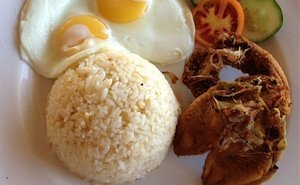
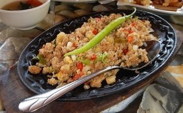
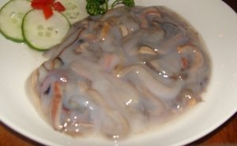
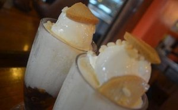
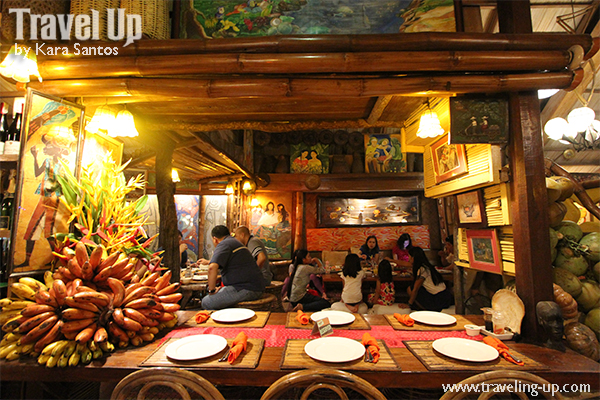

Puerto Princesa City, the capital of Palawan, is one of the most popular tourist cities in the Philippines. Best known for its beach resorts, stunning lagoons and the Underground River, Palawan is also a great place for foodies. Though you can now find malls with fast-food joints and international cuisine in Puerto Princesa, nothing beats sampling the homegrown cafes, feasting on fresh seafood, and trying out the unique eats the province has to offer. For first-time visitors, here are some of the must-eats to put on your foodie bucket-list in Puerto Princesa, Palawan.
Apart from the natural sites and exciting activities that await you in Palawan, a must-try experience is to feast on the local cuisine and dine in the top-rated restaurants. In this section, we’ll let you in on the unique local cuisine of Palawan and some highly-recommended restaurants and bars that you should check out when traveling to different destinations in the province.
RECOMMENDED FOODS
Filipino food is gaining popularity these days and recently the Philippines has become one of the top ten countries with the best food. There is no better way to get a taste of the Filipino delicacies when taking a vacation in Palawan. You can try out the many dishes by eating either from the street vendors or restaurants.
- Tamilok
- Chicken Inasal
- Chao Long Noodles
- Halo Halo
- Danggit Lamayo
-
If you are going to Coron, make sure to try the popular dish danggit lamayo. It consists in sun-dried Rabbitfishes marinated in vinegar, garlic, and pepper. Danggit Lamayo is served for breakfast in most of the hotels and guesthouses.

- Crocodile Sisig
Another exotic dish you can try in Palawan is Crocodile Sisig, a variation of the sizzling dish that typically uses pork. The taste of crocodile meat is similar to chicken, mild flavoured and firm in texture. It’s a healthy meat due to its high protein and low-fat composition. Some of the Filipino dishes that can be made from crocodile meat are sisig, Bicol express, sausages, and tapa. Sisig, which means “to snack on something sour” it refers to a method of preparing fish and meat marinated in a sour liquid such as calamansi juice or vinegar, then seasoned with salt, pepper, and other spices. You can try Crocodile Sisig at the Ka Inato Restaurant on Rizal Avenue.

Sampling exotic food in Palawan will most definitely broaden your culinary horizon and expand the way you think about food. One of the most popular dishes is the Tamilok. Tamilok known as woodworm, it’s actually a mollusk harvested from mangrove trees. It has a very long, soft and flabby body which tastes like an oyster. Many restaurants in Puerto Princesa serve Tamilok, though the most famous is the Kinabuch Grill & Bar on Rizal Avenue.

Chicken Inasal is a delicious grilled chicken dish. The chicken is marinated in a unique blend of spices and herbs, then grilled until done. Several restaurants in Palawan island serve this special grilled chicken dish and they are all very good. We suggest trying it at Haim Chicken Inato Restaurant in Manalo Extension.

Chao Long noodles have been introduced to Palawan by the Vietnamese immigrants. Puerto Princesa’s Chao long is flat, thin rice noodles in a sweet-savory broth with meat (beef or pork), served with the requisite plate containing sprigs of mint and basil, raw bean sprouts and calamansi. You can try Chao Long noodles and other Vietnamese dishes at the Rene’s Saigon Restaurant on Rizal Avenue.

Literally translated, it means “Mix-Mix” in Filipino. Halo Halo is a popular refreshing drink which consists of a mixture of sweetened preserved fruits, evaporated milk and crushed ice. The topping is either ice cream or leche flan.The best place to try Halo Halo in Puerto Princesa is Noki Nocs Savory House on Rizal Avenue.

RESTAURANTS
- Kalui Restaurant
Another very popular restaurant in Puerto Princesa is Ka Lui, a native restaurant that showcases beautiful Palawan artwork and serves meals based on the fresh catch of the day. The artistic restaurant highlights Palawan’s seafood specialties like blue marlin, tuna, sashimi, crabs, lobster and shrimps as well as fresh fruit shakes infused with local ingredients.
